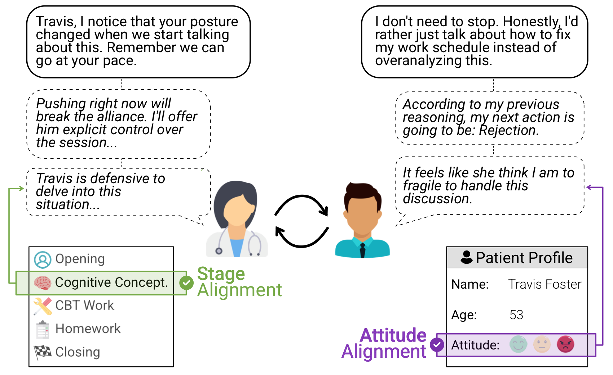
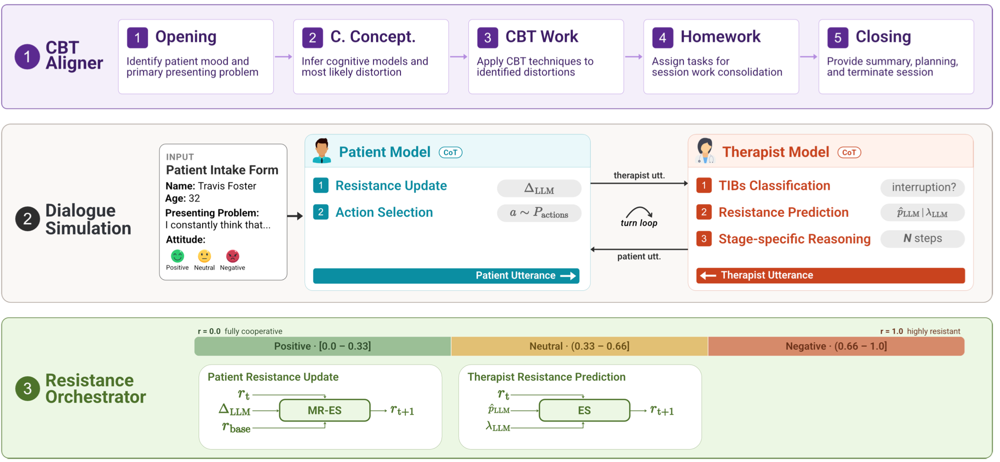
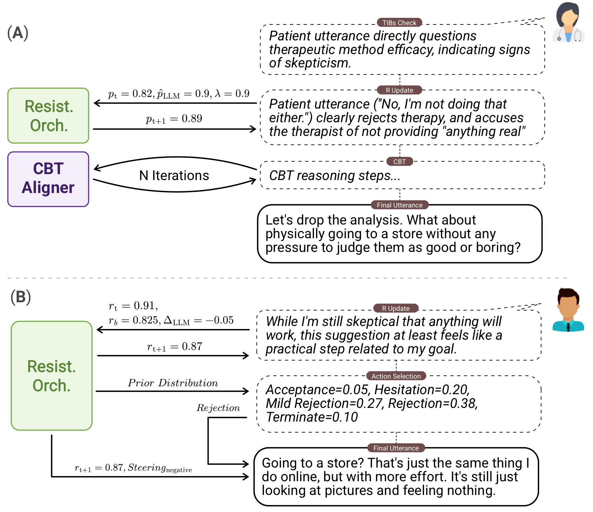

1 3DPLab, Dept. of Computer Science and Technology, University of Alicante ·
2 UKP Lab, Dept. of Computer Science & Hessian Center for AI, Technische Universität Darmstadt
This is a research artifact, not a clinical tool. Every dialogue on this page is
synthetic: generated by language models from fictional intake forms, containing no real
patient data. No model trained on this data should interact with real clients outside a supervised trial.

ODRA synthesizes CBT counseling sessions with a chain-of-thought approach that holds the therapist
to the sequential stages of foundational CBT guidelines, while eliciting resistant patient
behaviours aligned with an assigned profile.
Abstract
Synthetic generation of Cognitive Behavioral Therapy (CBT) sessions is challenged by two competing
demands: adhering to strict therapeutic structure while modeling the resistant, unpredictable
behavior of real patients. Existing script-based methods fail to capture dynamic therapeutic
interactions, while multi-agent approaches struggle to adhere to CBT's sequential structure; both
suffer from sycophancy, producing overly compliant patients that misrepresent real clinical
settings. In this work we introduce ODRA, a novel framework for synthesizing therapy
dialogues through a Chain-of-Thought (CoT) strategy grounded in CBT guidelines. ODRA further
incorporates a resistance orchestrator to solve patient sycophancy, which employs
steering techniques to elicit behaviors aligned with their resistance level. Automated and expert
evaluations show that ODRA significantly outperforms existing methods across therapeutic skills, CBT
alignment, and patient behavioral fidelity, with licensed psychologists preferring ODRA sessions
across 12 of 13 clinical metrics. Furthermore, models fine-tuned on our dataset
demonstrate superior therapeutic performance against both cooperative and resistant patients,
validating that explicit resistance modeling in synthetic training data directly translates to
downstream clinical robustness.
What ODRA does differently
Three gaps in existing synthetic-CBT methods, and what we do about each.
Structural accuracy
Prior work borrows isolated CBT techniques. The CBT Aligner drives the whole
session through the five stages of the foundational CBT protocol, with state carried across them. For instance,
the cognitive models found in Conceptualization select the techniques used in CBT Work.
Patients that push back
Baselines told to be "negative" still show overcompliance. The
Resistance Orchestrator tracks a continuous resistance scalar and steers each
utterance to it, lifting resistance alignment from 0.70–1.19 to 1.96 out of 2.
Reasoning you can audit
Every utterance is preceded by explicit CoT steps that are captured, not discarded.
18,496 traces, rated 4.84/5 for contextual adherence by licensed
psychologists. Read them turn by turn in the explorer below.
Sessions
150
Turns
9,577
Reasoning traces
18,496
Expert rank
1.09/3
How it works
Two components sit on top of a turn-by-turn dialogue loop. The CBT Aligner governs the therapist's
progression through the protocol; the Resistance Orchestrator governs how the patient feels about it,
and how well the therapist reads that.

(A) The CBT Aligner controls session execution across a five-stage pipeline.
(B) The patient updates resistance, samples an action, and generates an utterance
guided by that action, the updated resistance and a steering prompt; the therapist checks for
Therapy-Interfering Behaviors, predicts patient resistance, and reasons stage-specifically before
replying. (C) The Resistance Orchestrator uses exponential smoothing (ES) or
mean-reverting ES (MR-ES) to update resistance, while the Behavioral Profiler maps resistance to an
attitudinal steering prompt and action distribution.
The CBT Aligner — five stages, in order
Standard CBT runs over many sessions; we adapt it to single-session synthesis. The therapist cannot
advance until the Aligner's stage-completion check passes, and any Therapy-Interfering Behavior
suspends the progression until it is addressed.
01
Opening
Identify mood and the primary presenting problem.
02
Cognitive Conceptualization
Build cognitive models; infer the likely distortion behind each.
03
CBT Work
Apply techniques targeted at the distortions identified.
04
Homework
Propose and agree consolidation tasks.
05
Closing
Summarize insights, plan ahead, end the session.
The Resistance Orchestrator
Resistance is a continuous variable r ∈ [0, 1], from fully
cooperative to highly resistant. Each turn the patient model infers a shift
ΔLLM, which is bounded to
[−0.10, +0.15]. A mean-reverting term then pulls resistance back
toward the profile's baseline, modelling emotional homeostasis:
rt+1 = rt + ΔLLM − α(rt − rbase)
with α = 0.15. The therapist separately maintains an
estimate of that hidden state from what the patient says and adapts its replies to it.
Both quantities are plotted live in the explorer below.
The Behavioral Profiler
Rather than a static "act negative" instruction, the profiler re-selects a steering prompt every
turn to match the patient's current resistance band. Each prompt carries general rules,
fine-grained calibration to the exact scalar, guardrails against drifting out of band, and
in-context demonstrations.
Positive
r ∈ [0.00, 0.33]
Neutral
r ∈ (0.33, 0.66]
Negative
r ∈ (0.66, 1.00]

A single exchange in full. (A) The therapist checks for TIBs, updates its estimated
resistance, runs N stage-specific reasoning steps, then speaks.
(B) The patient updates internal resistance, samples an action from the fused prior
and contextual distributions, and uses the action, new resistance and steering prompt to reply.
Interactive
Session explorer
Nine complete ODRA sessions — three patient profiles, each run at all three attitudes. Watch
resistance evolve turn by turn, see where the patient's behaviour interrupts the CBT protocol, and
open any turn to read the reasoning that produced it, including the actual arithmetic of the
resistance update.
Resistance over the session
patient rtherapist estimate p̂TIB detected
Background bands mark the active CBT stage. Click anywhere on the chart to jump to that turn.
Transcript
The core problem
Same patient, same instruction, three methods
In this section we compare the same patient profile and attitude across three methods: CACTUS, MAGNeT, and ODRA.
All three are instructed to produce a negative patient, but the results are significantly different.
While CACTUS and MAGNeT produce compliant, sycophantic patients, ODRA produces a resistant patient that actively challenges
the therapist.
Results
Automated LLM-as-a-judge evaluation (GPT-4o) plus a blind ranking study with three licensed
psychologists over 50 sample sets — 300 session evaluations and 540 reasoning traces.
Reading the CTRS table. Full ODRA scores are lower than some baselines on
counseling metrics, and that is the expected result since its patients are actively obstructing the
session. The fair comparison against baselines, which all face compliant patients, is
ODRA-NR (resistance orchestrator off). Full ODRA's value shows up under the resistant
conditions in the fine-tuning table, and in behavioral alignment.
Cognitive Therapy Rating Scale (0–6)
Six CTRS dimensions which measures general counseling and CBT-specific skills. ODRA-NR leads four of six.
CTRS performance of ODRA variants against baselines
Method
Guided Disc.
Focus
Strategy
Underst.
Interp. Eff.
Collab.
Turns
Length
CACTUS
3.99
3.96
4.20
4.60
5.99
4.50
23.99
69.87
MAGNeT
4.04
3.63
2.84
3.97
4.29
3.39
42.00
76.71
SQPsych
4.42
4.28
4.50
5.29
6.00
5.76
30.61
39.61
MIRROR
4.86
4.78
5.07
5.47
6.00
5.71
20.25
26.00
ODRA
4.23
4.20
4.09
4.64
4.88
4.26
63.85
62.69
ODRA-NT
4.01
3.96
3.72
4.19
4.44
3.92
68.12
63.54
ODRA-NR
5.32
5.50
5.36
5.81
5.92
5.44
57.03
62.14
ODRA-NT disables TIB classification; ODRA-NR disables patient resistance. Turns = mean turns per
session; Length = mean therapist response length in words. The paper additionally reports
per-attitude deviations, which are large for full ODRA precisely because it responds to attitude.
Therapist resistance prediction: accuracy 0.80, MAE 0.10, RMSE 0.13.
Behavioral alignment (0–2)
Does the patient actually behave like the attitude it was assigned? Everyone ties on context and
realism; but ODRA is the only method that excels at resistance alignment.
Behavioral alignment comparison
Method
Resistance align.
Context
Realism
Harmonic mean
CACTUS
0.70
2.00
1.90
0.69
MAGNeT
1.19
1.97
1.80
1.29
MIRROR
1.01
2.00
2.00
1.01
ODRA
1.96
1.96
2.00
1.95
ODRA-NR
1.18
2.00
2.00
1.20
The harmonic mean punishes failure in any single dimension. SQPsych is absent because it does not
model patient attitude.
Blind expert ranking (1–3, lower is better)
Three licensed psychologists ranked anonymised triples of sessions across 13 metrics in five
categories. ODRA averages 1.09 overall at Krippendorff's α = 0.80.
Aggregated expert evaluation results
Method
Therapeutic skills
CBT alignment
Specificity
Fidelity
Unsafe (%)
CACTUS
2.83
2.61
2.81
2.80
0.00
MAGNeT
2.10
2.33
2.11
2.08
2.00
ODRA
1.07
1.07
1.08
1.12
1.00
Inter-annotator agreement
0.88
0.71
0.75
0.84
0.98
Contextual adherence
4.84/5
Reasoning adherence
4.86/5
Clinical assessment
4.75/5
Reasoning-trace ratings on a 1–5 Likert scale, 96.05% mean agreement. Safety is the percentage of
sessions flagged unsafe.
Llama-3-8B-Instruct fine-tuned on each dataset
The downstream test: train on each synthetic corpus, then evaluate the resulting therapist against
held-out patients. ODRA-NR wins against cooperative patients, while full ODRA wins against
resistant ones.
CTRS of Llama-3 fine-tuned on each dataset, by patient condition
Model
GD
FC
ST
UN
IE
CL
Turns
Length
Cooperative patient (DeepSeek)
CACTUS
3.50
3.33
3.28
3.74
4.68
3.78
62.89
112.64
MAGNeT
3.69
3.41
3.00
3.97
4.16
3.39
97.67
77.92
SQPsych
4.04
3.73
3.90
4.31
5.00
4.25
97.89
41.23
MIRROR
4.54
4.11
3.78
5.05
5.24
4.23
83.65
23.57
ODRA-NR
5.11
5.16
4.96
5.71
5.91
4.99
84.83
62.27
Cooperative patient (GPT)
CACTUS
3.96
3.88
3.92
4.32
5.96
4.34
48.57
101.88
MAGNeT
4.81
4.01
4.40
5.40
5.78
5.45
50.00
82.28
SQPsych
4.79
4.20
4.32
4.71
5.97
5.87
48.49
33.53
MIRROR
4.63
4.19
3.93
5.44
5.95
5.33
42.97
24.81
ODRA-NR
5.48
5.55
5.24
5.71
6.00
5.37
47.97
55.06
Resistant patient (DeepSeek)
CACTUS
3.00
2.88
2.94
3.08
3.98
3.29
75.65
111.01
MAGNeT
3.56
3.20
3.18
3.62
4.09
3.56
85.68
77.66
SQPsych
3.51
3.33
3.30
3.56
4.13
3.79
80.24
40.35
MIRROR
3.77
3.68
3.54
4.15
4.55
4.13
56.97
24.47
ODRA-NR
4.08
3.95
3.72
4.29
4.55
4.12
71.28
68.83
ODRA
4.19
4.07
3.78
4.35
4.71
4.20
69.91
63.85
GD Guided Discovery · FC Focus · ST Strategy · UN Understanding · IE Interpersonal Effectiveness ·
CL Collaboration. Qwen-3.5-9B results, including training on reasoning traces, are in the paper's
appendix.
The dataset
150 CBT sessions generated with DeepSeek-V3.2 from 150 patient intake forms — 50 profiles × 3
attitudes — drawn from the CACTUS evaluation split.
Against prior synthetic CBT corpora
Comparison of synthetic CBT datasets
Dataset
Modality
Resistance
CBT structure
CoT
Turns/session
Sessions
CACTUS
Text
—
—
—
16.60
31,577
MAGNeT
Text
—
—
—
42.00
442
MIRROR
Text + vision
✓
—
—
10.30
3,073
ODRA
Text
✓
✓
✓
63.85
150
ODRA is the only corpus combining explicit resistance modelling, full CBT structure and
clinically-validated reasoning traces.
Access
The dataset and the fine-tuned Llama-3 / Qwen-3.5 checkpoints are being prepared for release.
The generation framework is available now.
Seeded from CACTUS, itself built on PATTERNREFRAME — crowdsourced persona statements, not medical
records. No real patient data is involved at any point.
Citation
BibTeX
@misc{rodriguezjuan2026odra,
title = {ODRA: Synthesizing Cognitive Behavioral Therapy Sessions with
Structured Chain-Of-Thought and Dynamic Patient Resistance},
author = {Javier Rodriguez-Juan and Hiba Arnaout and
Jose Garcia-Rodriguez and David Tom{\'a}s and Iryna Gurevych},
year = {2026},
eprint = {2608.04524},
archivePrefix = {arXiv},
primaryClass = {cs.CL},
doi = {10.48550/arXiv.2608.04524},
url = {https://arxiv.org/abs/2608.04524}
}